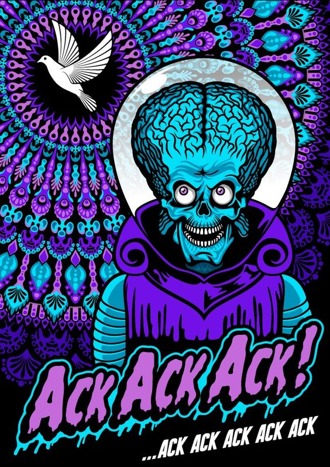
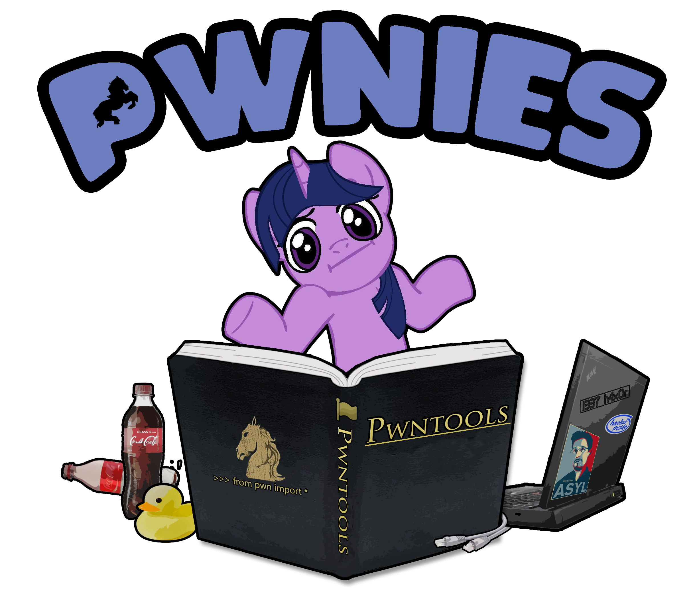

Hello to the curious, the paranoid, and the beautiful people. You found it. Everything past this line was sold as secure. None of it stays that way.
I came up opening locks for a living, a locksmith and general contractor who could never leave a mechanism alone without learning how it came apart. That instinct never left. I just traded the pin tumbler for the protocol. A cybersecurity degree and an OSCP later, the locks are digital now and the reflex is identical. Every lock is a promise about who gets to come in, and most promises are softer than they look.
Off the keyboard I am a Christian, a husband, and a father, raising kids who already know that curiosity is not a sin and that you read the manual all the way to the last page.
No malice, just the challenge, and usually faster than the vendor would be comfortable with. Web app chains, Active Directory, Windows and Linux privilege escalation, binary exploitation, reverse engineering. When the tooling gets in the way, I build my own.
The code grew up alongside me. Visual Basic 6 back when a variable still felt like magic, then C when I needed to know what the machine was actually doing, then Python when I just wanted the thing finished before the coffee went cold. These days I work as an AI prompt-engineering vibe coder, conducting the machine more than typing at it, which turns out to be its own kind of lockpicking.
This is the workshop, not the gallery. Hack The Box write-ups, the scripts and tools that fall out of them, and a running log of what I learn. I write it like the walkthrough I wish someone had handed me, not a sterile client report.
It's early. It fills up fast. Check back.

{{ post.excerpt | strip_html | truncate: 160 }}
{% endfor %}_posts/ to publish.If these write-ups helped you, find me on Hack The Box as @icebergdeep and drop a +1.
